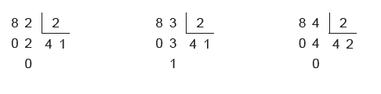
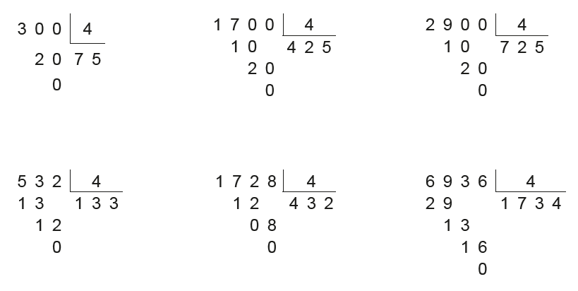
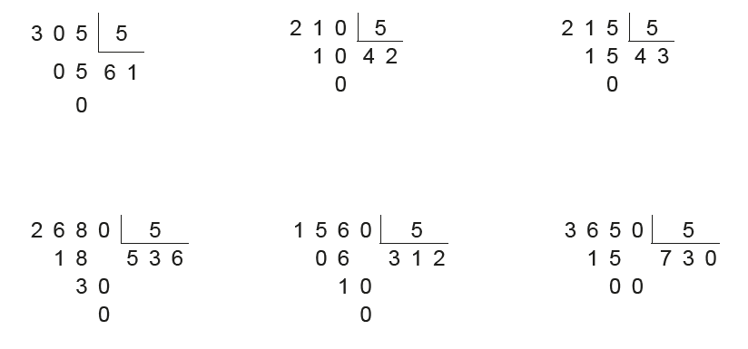
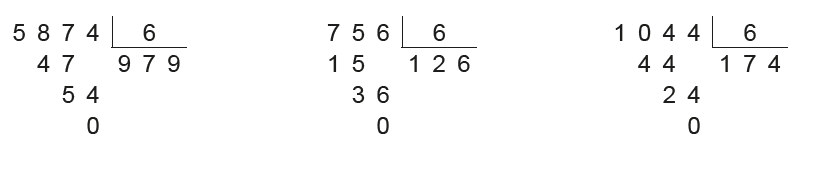
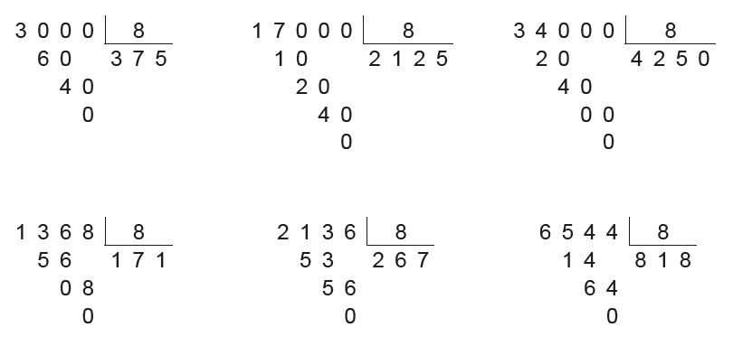
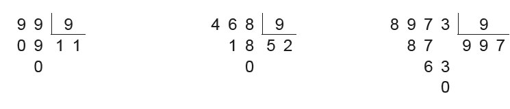
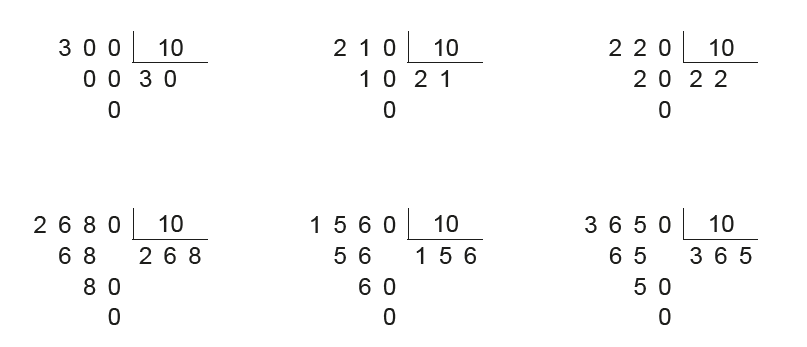

UNIDADE 4 - Divisibilidade
Westerpark. Amsterdã, Holanda, 2020.
132
Praticar esportes é muito importante para a saúde. A corrida, por exemplo, é um exercício aeróbico que ajuda a controlar o peso. Ela ajuda na queima de calorias e aumenta a taxa metabólica. O controle do peso desempenha um papel fundamental na prevenção do diabetes tipo 2, doença na qual os açúcares dos alimentos não são adequadamente metabolizados. Essa doença vem aumentando em todo o mundo, principalmente em países sob rápida industrialização.
Lucas e Joaquim, preocupados com a saúde, correm várias voltas em um parque perto de suas casas três vezes por semana. Lucas é mais rápido que Joaquim e dá uma volta na pista em 15 minutos, ao passo que Joaquim leva 20 minutos para percorrer a mesma distância.
CONVERSE
1. Se os dois começarem a correr no mesmo instante, saindo do ponto de partida, depois de quanto tempo eles passarão juntos pelo ponto inicial da pista?
2. Como vocês resolveram a questão anterior?
133
CAPÍTULO 1 - Divisores e múltiplos
Divisores de um número natural
Luciana resolveu comemorar seu aniversário com os colegas da escola. Para esse lanche, sua mãe vai levar, além de um bolo, 150 brigadeiros, 60 coxinhas e 60 pasteizinhos. Participarão do lanche: Luciana, sua mãe, a professora e os 22 colegas da classe.

1. Troque ideias com seus colegas e professor e calcule, em seu caderno, quantos salgadinhos de cada tipo e quantos docinhos cada um dos presentes receberá se forem divididos em quantidades iguais. Sobrarão docinhos ou salgadinhos?
Dizemos que um número natural é divisível por outro quando sua divisão é exata. Observe:
Nesse caso, temos que 186 é divisível por 2, ou ainda, que 2 é divisor de 186.
Podemos encontrar outros divisores do número 186, veja:
1, 2, 3, 6, 31, 62, 93, 186

2. Observe os números a seguir.
230 345 447 234 372 440 500 684
a) Com o auxílio de uma calculadora e a ajuda de seus colegas,
verifiquem quais dos números acima são divisíveis por:
2 3 4 5 6 8 9 10
b) O que os números que são divisíveis por 2 têm em comum?
c) O que os números que são divisíveis por 5 têm em comum?
d) O que os números que são divisíveis por 6 têm em comum?
134
UNIDADE 4 - CAPÍTULO 1
Critérios de divisibilidade
Divisibilidade por 2
Observe as divisões a seguir.
Os números 82 e 84 são divisíveis por 2, pois as divisões são exatas. Já em relação ao número 83, a divisão por 2 não é exata.
Um número natural é divisível por 2 quando ele é par, ou seja, quando termina em 0, 2, 4, 6 ou 8.
Divisibilidade por 3
Observe as divisões a seguir.

Os números 93, 120 e 261 são divisíveis por 3.
93 → 9 + 3 = 12
120 → 1 + 2 + 0 = 3
261 → 2 + 6 + 1 = 9
Observe que, nos três casos em que o resto é zero, a soma dos algarismos de cada número é um número divisível por 3. Esses três exemplos verificam o seguinte critério:
Um número natural é divisível por 3 quando a soma de seus algarismos dá um número divisível por 3.
UNIDADE 4 - CAPÍTULO 1
135
Divisibilidade por 4
Observe as divisões a seguir.
Todos os números acima são divisíveis por 4.
Um número natural é divisível por 4 quando termina em 00 ou quando os dois últimos algarismos, da direita para a esquerda, formam um número divisível por 4.
Divisibilidade por 5
Observe as divisões a seguir.
Todos os números acima são divisíveis por 5. Observe que todos terminam em 0 ou 5.
Um número natural é divisível por 5 quando termina em 0 ou 5.
136
UNIDADE 4 - CAPÍTULO 1
Divisibilidade por 6
Observe os números abaixo.
Esses números são divisíveis por 2 e por 3.
A seguir, temos as divisões desses números por 6.
Todos os números também são divisíveis por 6.
Um número natural é divisível por 6 quando é divisível por 2 e 3 ao mesmo tempo.
Divisibilidade por 8
Observe as divisões a seguir.
Todos os números acima são divisíveis por 8. Note que os três últimos algarismos, da direita para a esquerda, de cada número terminam em 000 ou formam números divisíveis por 8.
Um número natural é divisível por 8 quando termina em 000 ou quando os três últimos algarismos, da direita para a esquerda, formam um número divisível por 8.
UNIDADE 4 - CAPÍTULO 1
137
Divisibilidade por 9
Observe as divisões a seguir.
Os números 99, 468 e 8 973 são divisíveis por 9.

Reinaldo Rosa/Acervo da Editora
99 → 9 + 9 = 18
468 → 4 + 6 + 8 = 18
8 973 → 8 + 9 + 7 + 3 = 27
Observe que, nos três casos, a soma dos algarismos de cada número é um número divisível por 9.
Um número natural é divisível por 9 quando a soma de seus algarismos é um número divisível por 9.
138
UNIDADE 4 - CAPÍTULO 1
Divisibilidade por 10
Observe as divisões a seguir.
Todos os números acima são divisíveis por 10.
Um número natural é divisível por 10 quando termina em 0.
Divisibilidade por 100 e por 1 000
1. Elabore, em seu caderno, um critério de divisibilidade por 100 e outro critério para a divisibilidade por 1 000.
ENCONTRE SOLUÇÕES
1. Em seu caderno, escreva cinco divisores de cada um dos números abaixo.
a) 45
b) 36
c) 64
d) 56
2. Observe os números a seguir.
663
745
1 214
1 850
2 502
a) Quais desses números são divisíveis por 2?
b) Quais são divisíveis por 3?
c) Quais são divisíveis por 5?
d) Existe algum número divisível por 6? Qual?
3. Qual é o maior número de dois algarismos que é divisível por:
a) 2?
b) 3?
c) 5?
d) 6?
4. Responda às questões a seguir, justificando a resposta dada.
a) O número 3 789 é divisível por 2?
b) O número 1 632 é divisível por 3?
c) O número 1 500 é divisível por 4?
d) O número 62 048 é divisível por 8?
UNIDADE 4 - CAPÍTULO 1
139
5. No caderno, escreva a sequência dos 10. Os Jogos Olímpicos de Londres foram divisores dos seguintes números:
a) 20
b) 27
c) 63
d) 80
► Qual o maior divisor comum entre 27 e 63?
► Qual o maior divisor comum entre 20 e 80?
6. O número da casa de Carlos é formado por três algarismos iguais e é divisível, ao mesmo tempo, por 6 e 8. Qual é o número da casa dele?
7. Que algarismos podem ser colocados no lugar de X, para que esse número seja divisível por 6?
8. Qual é o menor número de quatro algarismos divisível por:
a) 2?
d) 6?
b) 3?
e) 8?
c) 5?
f) 9?
9. Um ano é bissexto quando o número que o representa é divisível por 4. No caso dos anos que terminam em 00, só se eles também forem divisíveis por 400. O ano de 2020 foi bissexto. Nesse caso, o mês de fevereiro teve 29 dias, como mostra o calendário a seguir.
► Verifique se os anos abaixo foram bissextos.
a) 1600
b) 1732
c) 1800
d) 2004
10. Os Jogos Olímpicos de Londres foram realizados no ano de 2012, reunindo 191 países e 13 territórios participantes.
a) Esse ano foi bissexto?
b) De quantos em quantos anos são realizados os Jogos Olímpicos?
c) Podemos dizer que os Jogos Olímpicos vêm coincidindo com os anos bissextos?
11. Uma forma prática de mostrar se um número é divisível por outro é por meio de um fluxograma. Um fluxograma é um esquema que representa o caminho necessário para chegar a uma conclusão. Observe o fluxograma a seguir que nos mostra se um número é par ou não.

► Com um colega, escolham um número natural e, em seus cadernos, usando o fluxograma, verifiquem se o número é ou não par.
12. Observe o fluxograma a seguir

► Esse fluxograma representa qual critério de divisibilidade?
13. Em seu caderno, elabore um fluxograma que represente quando um número natural é ou não divisível por 3.
140
UNIDADE 4 - CAPÍTULO 1
Múltiplos de um número natural
Marcelo vai iniciar uma pesquisa para um trabalho da escola. Ele deverá plantar uma flor e acompanhar seu crescimento. Para isso, deverá medi-la de 4 em 4 dias, até o 40.º dia, e anotar em um quadro a altura da planta no momento de cada medição.
Observe o quadro que ele construiu.

Os números dessa sequência representam os dias de medição e são múltiplos de 4.
Observe a sequência de alguns números naturais que são múltiplos de 4:
0, 4, 8, 12, 16, 20, 24, 28, 32, 36, 40, 44, 48, 52, ...
Para determinar os múltiplos de um número natural, multiplicamos-o pela sucessão dos números naturais.
A sequência dos múltiplos de um número natural é infinita.
Exemplos:
► 35 é múltiplo de 5 ou 35 é divisível por 5.
► 70 é múltiplo de 7 ou 70 é divisível por 7.
ENCONTRE SOLUÇÕES
1. Qual a sequência dos sete primeiros múltiplos de cada um dos números a seguir?
a) 2
b) 6
c) 3
d) 10
e) 5
f) 12
2. Em seu caderno, escreva:
a) o maior múltiplo de 5 formado por três algarismos;
b) o menor múltiplo de 4 formado por três algarismos;
c) o menor múltiplo de 6 entre 200 e 300;
d) o maior múltiplo de 9 entre 500 e 600.
UNIDADE 4 - CAPÍTULO 1
141
3. Qual o menor múltiplo comum, diferente de 0 (zero), entre:
a) 12 e 18?
b) 10 e 15?
c) 11 e 44?
4. Para realizar um trabalho, a professora de História dividiu a turma, que tem 36 alunos, em três grupos, de acordo com os seguintes critérios:
► o grupo A foi formado pelos números pares da lista de chamada, porém que não fossem múltiplos de 3;
► o grupo B foi formado pelos números múltiplos de 3;
► o grupo C foi formado pelos demais números da lista de chamada.
a) Que números da lista de chamada ficaram em cada grupo?
b) Com quantos alunos cada grupo ficou?
5. Leia o texto a seguir.

Por volta de 540 a.C., o filósofo grego Pitágoras fundou, na cidade de Crotona, localizada ao sul da península italiana, uma escola voltada ao estudo da Filosofia, das Ciências Naturais e da Matemática. Muitos de seus discípulos se reuniram nessa escola, que acabou se tornando uma sociedade secreta.
Os pitagóricos, como eram chamados, espalharam pelo antigo mundo grego o interesse pelo estudo da Matemática. É atribuído a eles o início do desenvolvimento da Teoria dos Números. Eles descobriram os chamados números amigos e números perfeitos.
Um par de números é chamado de números amigos se cada um deles é igual à soma dos divisores próprios do outro. Os divisores próprios de um número natural maior que 0 (zero) são todos os divisores naturais desse números, exceto o próprio, por exemplo: 1 184 e 1 210 são amigos, pois os divisores próprios de 1 184 são 1, 2, 4, 8, 16, 32, 37, 74, 148, 296 e 592, cuja soma é igual a 1 210, e os divisores próprios de 1 210 são 1, 2, 5, 10, 11, 22, 55, 110, 121, 242 e 605, cuja soma é 1 184.
São chamados perfeitos os números cuja soma de seus divisores próprios é igual a eles. Por exemplo, a soma dos divisores próprios de 6 (1, 2 e 3) é ele mesmo.
a) Com o auxílio de uma calculadora, verifiquem se os pares de números a seguir são amigos.
124 e 146
220 e 284
b) Agora, verifiquem se os números a seguir são perfeitos.
36
28
142
UNIDADE 4 - CAPÍTULO 1
6. Vamos descobrir múltiplos? Construa, em seu caderno, um quadro com os números de 0 a 99, como mostra o modelo.


► Convide um colega para jogar, obedecendo às regras descritas a seguir (Clique aqui para visualizar as regras).
1. Cada jogador deverá escolher uma cor de lápis para pintar os números e múltiplos que encontrar.
2. O jogador que iniciar o jogo deverá selecionar um número do quadro, pintando-o com a cor que escolheu.
3. O outro jogador deverá encontrar a maior quantidade possível de múltiplos do número selecionado, pintando-os com a cor que escolheu.
4. Quando o jogador terminar de pintar, deverá então escolher um número para que o outro jogador encontre os múltiplos.
5. O jogo terminará quando todos os números forem pintados, lembran-do que um número só pode ser pintado uma vez, mesmo que seja múltiplo de outro número também.
6. Caso um jogador pinte um número que não seja múltiplo, este deverá ser assinalado, para que, no final, não seja considerado na pontuação.
7. Vencerá o jogo quem tiver mais números pintados.
Reinaldo Rosa/Acervo da Editora
UNIDADE 4 - CAPÍTULO 1
143